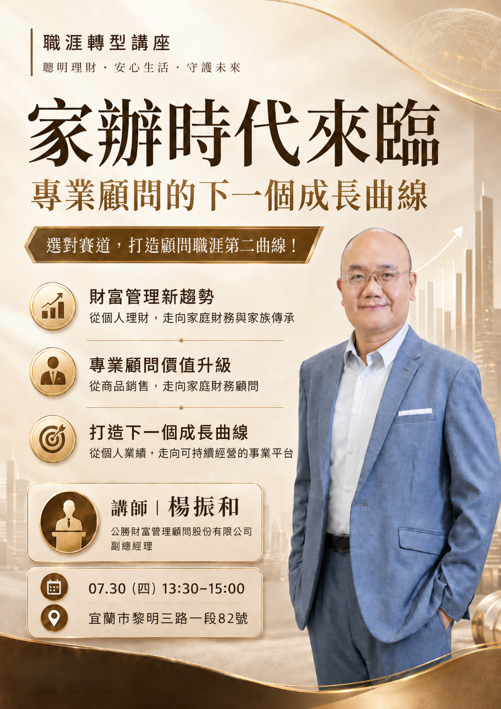

CAREER & OPPORTUNITY
換一條賽道，不必放下原有專業
從顧問職涯升級、跨域轉型，到退休後的專業延續，第二曲線課程協助你看懂選擇、認識機會，再決定適合自己的下一步。


財顧職涯
探索
探索
COMING NEXT
接下來，還有更多職涯探索與成長課程
新的職涯轉型、專業成長與財顧合作課程，會持續整理在這裡，陪你在適合的時候找到下一步。
這裡整理職涯轉型、專業成長與合作探索課程，陪你帶著原有經驗，找到下一個值得投入的方向。
從顧問職涯升級、跨域轉型，到退休後的專業延續，第二曲線課程協助你看懂選擇、認識機會，再決定適合自己的下一步。

新的職涯轉型、專業成長與財顧合作課程，會持續整理在這裡，陪你在適合的時候找到下一步。